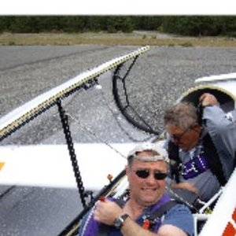

Benoît Robart

Contact
khun1964@gmail.com
06 07 10 46 31
https://www.linkedin.com/in/benoit-robart-6055508b/
56 Rue du Capitaine Lheureux
59184, Sainghin en Weppes
Formation
Juin 1986 - Baccalauréat ES - Lycée E-Woillez- montreuil sur Mer
1988-1991 - DEFA Architecture - ENSAP de Lille
1991-1996 - Fin Cycle DPLG + Stage Atelier2-Labassée + DDE-Valenciennes -
1999-2000 - DU/diplôme Universitaire Paris 8 / equivalent Licence 3
2013-2014 - équivalence master2 Artchitecture ENSAP-Lille
Expériences professionnelles
Stages en entreprise
Juillet - Août 1996- Ateliers2 - LaBassée
En tant qu'assistant commercial
Septembre 1996 Février 1997 -lieu Défriché de Condé sur l'Escault pour la DDE - Valenciennes
Enquêteur DDE : questionnaire aux habitants
Etat des lieux + photos des détails.
Relevé des batiments pour une future destruction
Emplois Roissy
Décembre 2000 - Septembre 2008 - Airline Ground Service - Roissy
En tant que Loadmaster/C2
Décembre 2000 - Septembre 2008 - Airline Ground Service - Roissy
En tant que Loadmaster/C2
Compétences
Informatiques
JAVA
HTML/CSS
C#
C++
Linguistiques
Fançais-natif
Anglais-UK
chti
Klingonnais classique
Divers
Formation en aéronautique
pratique professionnel en infographie
European propaganda training
Centres d'intérêt
Planeur
Histoire des sciences